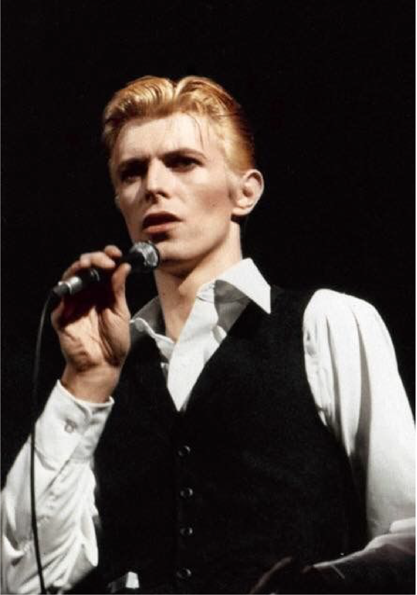

The Thin White Duke was created when Bowie was struggling with drug addiction and stress and is connected to the “Station to Station” album. This alter ego portrays a troubled man, who sings of romance but is completely numb to feelings. It is his most controversial persona as it has been called a psychopathic aristocrat and an immortal zombie.


